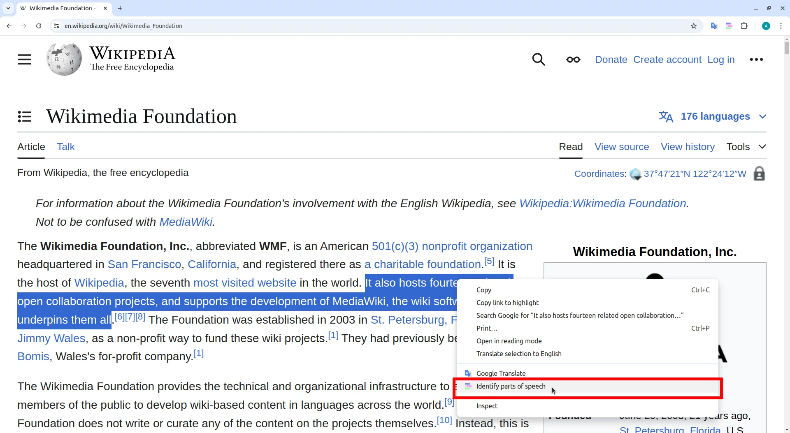
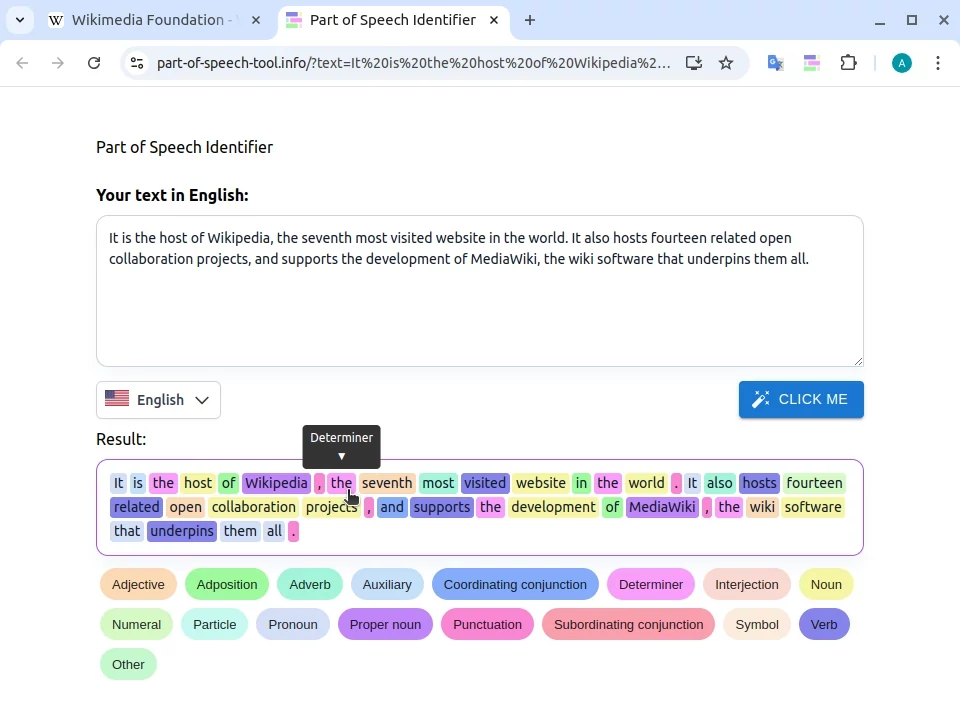

Welcome!
Part of Speech Identifier has been installed 🎉
How to use the extension:
- Select some text on the page.
- Right-click and choose "Identify parts of speech" from the menu.

- View the result.

Alternatively, you can use the web version instead of this extension:
Open the web version